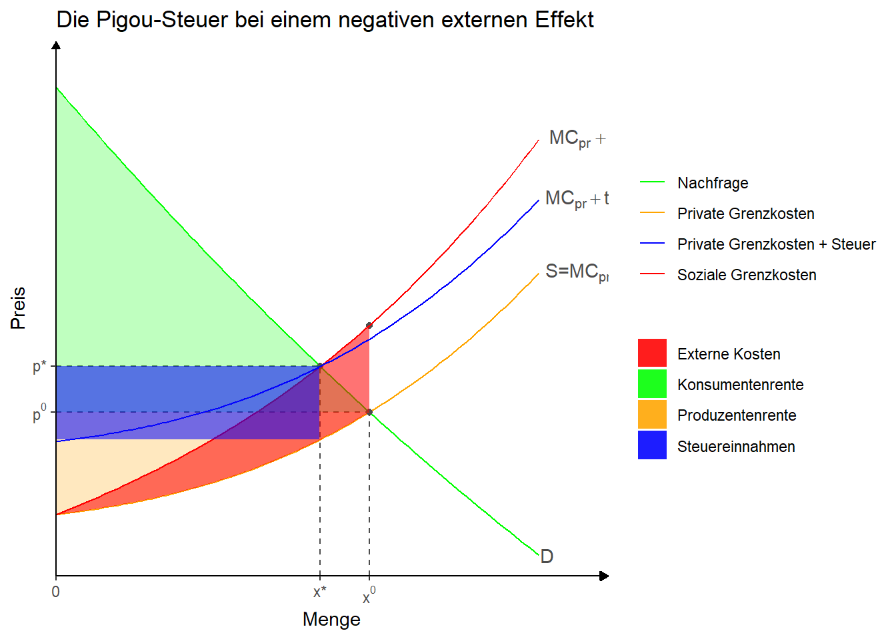

3 Marktversagen als Hindernis für eine nachhaltige Entwicklung
3.1 Theorie
3.1.1 Externe Effekte
\(\rightarrow\) Umweltökonomik
Hier: Kurzfassung
Allokativ relevante externe Effekte liegen vor, wenn durch Markttransaktionen Kosten- oder Nutzenwirkungen bei unbeteiligten Dritten entstehen, die sich nicht (hinreichend) handlungsleitend in Marktpreisen widerspiegeln.
Wenn bestimmte Kostenwirkungen unberücksichtigt bleiben, dann wird im Gleichgewicht zu viel von einem Gut angeboten und nachgefragt.
Mögliche Reaktionen des Staates (bei negativen externen Effekten)
Ge- und Verbote
Die Pigou-Steuer
Umweltzertifikate
Förderung von Substitutionsgütern und -technologien
\(\dots\)

3.1.3 Informationsasymmetrie
Vor Vertragsabschluss: Adverse Selektion
Nach Vertragsabschluss: Moral hazard?
Private und staatliche Bewältigungsstrategien?
3.1.5 Unvollständige Märkte
Nicht alle Risiken sind versicherbar
Schadensereignisse mit sehr geringer Eintrittswahrscheinlichkeit aber sehr hohem Schaden
Risiken in einem Umfeld, das durch Markthandlungen erst noch geformt wird (Unternehmensstrategien)
Risiken, bei denen nicht unterscheidbar ist, inwieweit sie endogen oder exogen sind (Arbeitslosenversicherung)
Für Absicherungen gegen diese Risiken gibt es keine (oder eben nur unvollständige) Märkte
Lösungen:
Staatliche Absicherung
Private Absicherung durch Eigenkapital